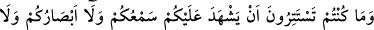
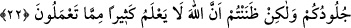
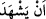
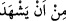
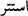
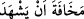

22. Siz ne kulaklarınızın, ne gözlerinizin, ne de derilerinizin aleyhinize şâhidlik
etmesinden sakınmıyordunuz, yaptıklarınızdan çoğunu Allah’ın bilmeyeceğini
sanıyordunuz.
“Siz ne kulaklarınızın, ne gözlerinizin, ne de derilerinizin aleyhinize şâhidlik
etmesinden sakınmıyordunuz,” şâhidlik edeceklerini ummadığınız için onlardan hiç
gizlenmediniz.
() ifâdesi, () takdîrinde olup başındaki cer harfi hazfedilmek sûretiyle
mansuptur; çünkü () fiili, kendi başına mef’ûl almaz. () şeklinde muzâf
takdîri ile mecrur da olabilir. Âyetteki her iki () da olumsuz mânâyı güçlendirmek için
ziyâde edilmiştir.
Bu ifâde, o gün bunlara derilerin verdiği cevabı pekiştirmek için Yüce Allah
tarafından söylenecek kınama ve azarlama yollu sözlerin hikâyesidir. Mânâ şöyledir:
Dünyada o çirkin cinsel suçları işlerken “yahu bunlar bizim aleyhimizde şâhidlik eder!”
diye korkmadığınız için hiç gizlenmezdiniz. Öyle ya, bunlar konuşma vasfı bulunmayan
sessiz cisimlerdi! Kendi istikbâliniz açısından, “rezil oluruz” korkusuyla duvar ve
perdelerin arkasına, gecenin karanlığına sığınarak insanlardan gizlenme ihtiyâcı
duyduğunuz halde, bunları hiç dikkate almazdınız; hatta siz, bırakın organlarınızın
şâhidlik edecek olmasını; daha baştan dirilme ve hesabı bile bile inkâr ederdiniz.
Burada, müminin ‘üzerinde bir gözetmen olmaksızın tek bir an bile geçirmediği,
çünkü nerede olursa olsun Allah’ın kendisiyle birlikte olduğu’ şuûru içerisinde olması
gerektiğine dikkat çekilmektedir.
Hadiste: “Kişinin îmânının en üstün durumu nerede olursa olsun Allah’ın
kendisiyle birlikte bulunduğunu bilmesidir.”
Sevgilin her yerde seninle beraberse,
Ey lâf anlamaz serseri, neden başka bir yer ararsın?
Bir örtünün altında seninle bir olan madem ki odur,
Ey edepsiz adam, git de onu kendinde bul.
Kul, hareketlerine dikkat etmeli ve hesaba çekilmeden kendini hesaba çekmelidir.
Baklî Arâis’inde der ki: Her kim bir mâsiyet işlerse, onun izleri organlarında
görünür; sadece kendisi bilse ve izler tamamen yok oluncaya kadar gizli gizli istiğfâr
etse bile, o izleri gizleyemez; bu izleri öyle her bakan göremez.
Ebû Osman (r.h.) der ki: Günah işlemek üzere iken organlarının kendi aleyhinde
şâhidlik edeceğini hatırına getirmeyen biri o günahı işlemeye cür’et edecek; bunu